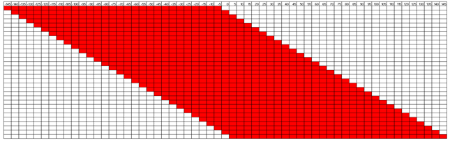

SHARPR (Systematic High-resolution Activation and Repression Profiling with Reporter-tiling)

SHARPR is software for analyzing Massively Parallel Reporter Assay tiling designs allowing mapping
at high resolution activating and repressive nucleotides across thousands of regulatory regions.
Quick instructions on running SHARPR on example data:
1. Install Java 1.6 or later if not already installed.
2. Unzip the file SHARPR.zip.
3.
To run SHARPR on the sample data to infer base level predictions directly from count data type from the SHARPR directory:
java -mx2000M -jar SHARPR.jar ExecuteAll EXAMPLE/HepG2_ScaleUpDesign1_minP_mRNA_Rep1.counts,EXAMPLE/HepG2_ScaleUpDesign1_minP_mRNA_Rep2.counts
EXAMPLE/ScaleUpDesign1_minP_Plasmid.counts,EXAMPLE/ScaleUpDesign1_minP_Plasmid.counts 3 145 5 31 EXAMPLE/basepredictions_HepG2_ScaleUpDesign1_minP.txt
Funding for SHARPR provided by NIH grants R01ES024995, U01HG007912 and U01MH105578 (J.E.), R01HG006785 (T.S.M.), R01GM113708, U01HG007610, R01HG004037, U54HG006991 and U41HG007000 (M.K.), an NSF CAREER Award #1254200, and an Alfred P. Sloan Fellowship (J.E.).